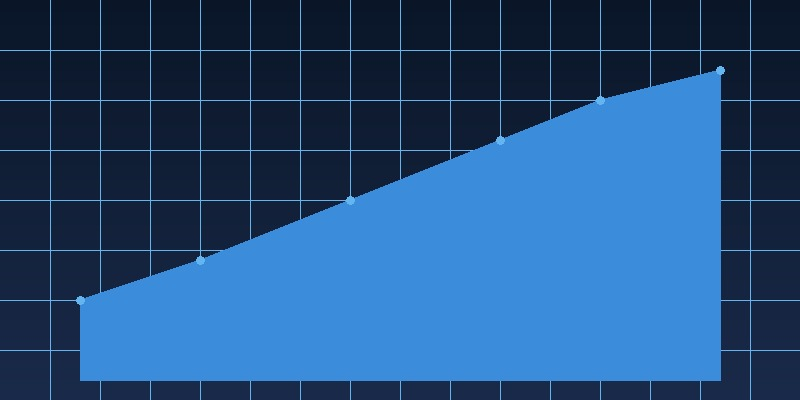

Market Analysis
Reading Between the Lines: How to Interpret Quarterly Earnings Reports Beyond the Headlines
Wall Street lives and dies by earnings season, but the real story is rarely in the headline numbers. Here is how to decode what management is really saying.